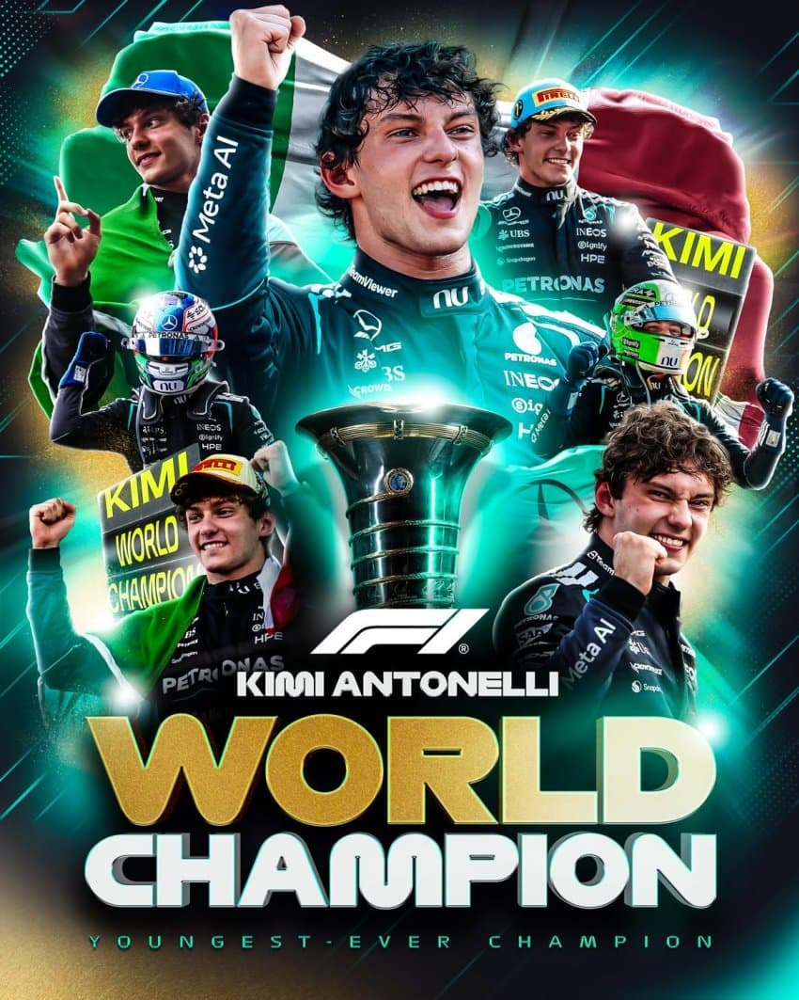
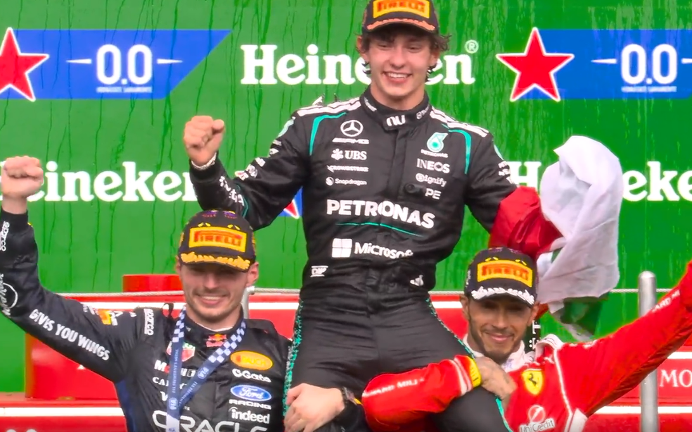

키미 안토넬리가 20세 68일로 최연소 F1 월드챔피언에 등극


키미 안토넬리가 20세 68일로 최연소 F1 월드챔피언에 등극
메타 광고박을 자리 개잘잡았네 ㅋㅋ
이제 남은 경기 다 꼬라박아도 확정인건가?
아예 확정
남은 경기 다 꼴지해도 됨
난놈이긴 해
미쳣네 ;
이런건 이탈리아 사람들이 잘하네
이제 키미가 해밀턴 포지션
러셀이 보타스 포지션 되는거임?
러셀 성격상 보타스처럼 연금타먹고 고분고분 앉아있을거같진 않은디..
??? : 죠지 잇츠 제임스
러셀이 이번시즌 우승할줄 알았지만 개미가 미친듯이 잘했다 ㄹㅇ 타고난놈
무친 개미
토버지.. 당신의 선구안은 대체...
흐흥...
세상에서 가장 안전한 길을 기계빨로 달려서 순위 매기는 대회~~
근데 저거 훈련하는 영상보니까 장난아니던데 경기 한번 하고 나면 몸무게 존나빠지고
ㄴㄴ 이거 템플릿임
영화대사임 ㅋㅋ
뺑반이라는 영화에서 폭주족 출신 경찰이, F1 레이서 도발하는 대사
아하...
멕라렌이
이렇게 몰락할줄 몰랐다
F1은 드라이버 실력 아무리 좋아도 차빨한테 거의 짐?
ㅇㅇ
거의 짐 드라이버의 신이 타도 차가 구리면 안 됨
그럼 1티어 드라이버가 2티어 차 타고
1티어 차 탄 2티어 드라이버도 못이기는거?
ㅇㅇ 무슨 짓을 해도 그 해의 티어 차량 회사는 때려 죽여도 못 넘는 게 정배임
한끗차이는 똥꼬쇼로 비벼볼수 있음
그래서 팀우승이랑 드라이버우승이 다른경우가 나오는거고
한 두순위 차이나면 답안나옴
라고 생각 했는데
레드불 머신에 하위팀 드라이버 올려 놓으니까 죽쓰는거 보면 드라이버 + 팀세팅 + 머신 성능 인듯
애초에 차가 좆병신상태면 차가 드라이버실력을 죽여버림 지혼자 코너에서 돌아버려고해서 속도 더 줄여야하는데 그걸 어케이김
애스턴마틴 : ㅜㅠ
같은 차를 타는 선수끼리 대체로 순위가 비슷한거보면
차 성능이 80% 이상인거 같고
20%는 차의 특성과와 드라이버의 성향의 궁합이라고 봄
11챔의 목마 ㅋㅋ
나도 이 생각함 ㅋㅋㅋ
20살에 월드 챔피언이면 난 20살 때 뭐 했나 반성하게 되네 ㅋㅋ
맥 이번엔 꼬라박았내ㄷㄷㄷ해밀턴이랑 막스가 2.3등이고 초반엔 막스 하위더만 역시 잘하내
러셀은 아쉽게 되었다 올해 억까가 많았어
아니었으면 월챔 할만 했는데
와 뭐야 키미 월챔 됐어??
와 ㅋㅋㅋㅋㅋㅋㅋㅋㅋ
처음에 차 몇 대 해먹는거 보고 시간 좀 걸리겠다 싶었는데
메르세데스 존버 성공했네
거인들 어깨위에 서다
해밀턴 이적 안했으면 8챔인데 ㅋ
러셀이 올해 운이 안좋았는데 그런거 치고도 개미가 잘몰았다 ㅇㅇ
키미도 중간중간에 리타도 하고 포디움 못들기도 했는데 시즌 초반에 ㅈㄴ 잘했음
대 개 미